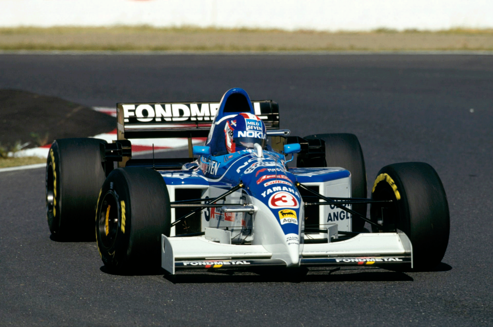

SHOW DE ALESI, 9ª VITÓRIA DE SHUMACHER E BENETTON CAMPEÃ
Alesi brilha na pista escorregadia enquanto Schumacher conquista pole pela primeira vez desde o Canadá e iguala recorde de Mansell com 9 vitórias. Williams sofre humilhação com dois pilotos saindo da pista. Hakkinen faz excelente retorno e garante segunda posição. Herbert alcança terceiro lugar e fortalece título para a Benetton. Barrichello bate em Irvine e é obrigado a abandonar. Lamy em 11º lugar mostra determinação.:
Por Francisco Santos
Quem acusa a Fórmula 1 de ser monótona? O Grande Prêmio do Japão, em Suzuka, sempre proporcionou grandes espetáculos e emoções. Nem sempre esportivos, mas sempre recompensando os fãs brasileiros com muita adrenalina. Essa corrida não foi diferente. Foi um caso de talento e humilhação, ambos antológicos. Com pista escorregadia, é certo que Alesi sempre dá um show de pilotagem, levando o Ferrari 412T2, um chassis com excelente aderência mecânica, a performances nunca antes imaginadas em pista seca. Isso aconteceu em Nurburgring e agora em Suzuka, que é uma pista desafiadora para os grandes pilotos, com suas curvas longas e rápidas, a maioria delas sem visibilidade do ponto de tangência. Com pista molhada no domingo, Alesi, que largou da primeira fila, não fez uma largada muito rápida, mas conseguiu se distanciar de Hakkinen e não ficou muito atrás de Schumacher.
Stop & Go das Ferrari
No entanto, as duas Ferraris foram penalizadas com stop & go, e Alesi foi o primeiro a cumprir a penalização na quarta volta, voltando em décimo lugar, atrás de Frentzen. Em seguida, testemunhamos uma das mais fantásticas exibições de um piloto. Pouco depois, com a pista começando a secar um pouco, mas ainda perigosa, já que fora da trajetória ainda estava molhada, Alesi foi o primeiro a trocar para pneus slicks. Voltou à pista em 15º lugar. Logo depois, teve um desentendimento com Lamy, saiu da pista, rodou 360 graus e continuou em seu ritmo avassalador, ganhando 7 segundos por volta em relação a Schumacher! Na sua frente estava Hill, e então testemunhamos uma ultrapassagem exemplar que mostra a enorme diferença entre um piloto talentoso e determinado e outro sem esse dom natural e desmotivado: na frenagem para a chicane, que no passado já foi palco de grandes emoções entre Prost e Senna, agora descobrimos como é possível ultrapassar por fora, sem sequer tocar ou colocar o outro piloto em perigo. Alesi simplesmente levou a frenagem aos limites jamais imaginados e contornou a Williams como se ela estivesse parada, tomando a trajetória mais conveniente e limpa. Na 24ª volta, Alesi já estava apenas 2,4 segundos atrás de Schumacher, e esperava-se uma segunda metade emocionante da corrida. No entanto, na volta seguinte, o diferencial da Ferrari quebrou e o show acabou.

Williams patéticos
Frank Williams ainda tinha esperanças de conquistar o tricampeonato de construtores, mesmo chegando a Suzuka com uma desvantagem de 21 pontos em relação à Benetton. No entanto, os pilotos da equipe tiveram atuações lamentáveis neste fim de semana. Durante a corrida, Hill, claramente superado por Alesi, foi o motivo de risos ao sair sozinho da pista na 36ª volta, na curva Spoon. Coulthard cometeu o mesmo erro no mesmo local, retornou à pista e teve um acidente inusitado: a brita dos pontões laterais se soltou e seu carro escorregou sobre ela, levando-o ao abandono. Na volta seguinte, Hill repetiu o erro na curva Spoon, mas desta vez ficou preso na caixa de brita. Pode-se argumentar que talvez a culpa tenha sido do óleo derramado por Diniz naquele trecho da pista quando seu motor quebrou na 32ª volta, o que também causou a saída de pista de Blundell logo após a primeira escapada de Hill. No entanto, devemos lembrar que isso é a F1 e os pilotos têm a obrigação de saber lidar com situações extremas, especialmente quando sabem que há um problema naquela parte da pista.
Japoneses menos fanáticos
Ao lado de Spa e Interlagos, o circuito de Suzuka é um dos mais desafiadores e interessantes do calendário da Fórmula 1. Projetado por quem também desenhou Zandvoort, essa pista oferece diversas oportunidades de ultrapassagem e é um verdadeiro teste de habilidade e coragem para os pilotos. Embora o Grande Prêmio do Japão ainda atraia um grande público, o entusiasmo dos japoneses pela F1 diminuiu um pouco. Já não é a mesma loucura da época de Senna, o maior ídolo da F1 para os japoneses. A busca desenfreada por ingressos para o ano seguinte, que costumava ter mais de 1 milhão de solicitações, está mais lenta. O fanatismo não é mais o mesmo. Dizem que os jovens japoneses agora estão dividindo seu interesse pelo futebol.
OS TREINOS
s treinos foram agitados desde o primeiro dia, com mudanças bruscas no clima e muitos acidentes. Depois do "kartódromo de F1" de Aida, encontrar uma pista desafiadora e rápida como esta não foi fácil. Logo no primeiro treino livre, Schumacher dominou, registrando o melhor tempo em todas as sessões, exceto no treino livre de sábado, onde a grande surpresa foi Hakkinen com a melhor marca, seguido por Irvine. Na primeira qualificação, Blundell saiu da pista antes mesmo de completar uma volta rápida. No dia seguinte pela manhã, ele sofreu um acidente mais grave e não pôde andar a tarde, largando em último lugar no grid, sem tempo.
Qualificações emocionantes
As duas sessões de qualificação foram intensamente disputadas, com diferenças mínimas entre os líderes. No início da sessão de sexta-feira, a diferença entre os três primeiros tempos era de apenas 0,06s, e essa disputa só foi desequilibrada quando Schumacher marcou uma volta espetacular que lhe garantiu a pole position provisória, com uma vantagem de 0,604s sobre Hill, seguido de Hakkinen. No sábado, depois de Irvine ter registrado as melhores voltas no início, a única melhoria em relação ao dia anterior veio de Berger nos primeiros 15 minutos. Pouco aconteceu até os últimos 9 minutos, quando ocorreu um forte acidente envolvendo Suzuki. Após a retomada, a sessão esquentou, com uma briga acirrada entre Hakkinen, Hill, Coulthard e Alesi pelos melhores tempos. Schumacher entrou na disputa a 13 segundos do final para impor sua autoridade e conquistou sua primeira pole position desde o Grande Prêmio do Canadá, reduzindo seu tempo do dia anterior em 0,405s e superando Alesi por 0,865s! Dos sete primeiros colocados, apenas os pilotos da Williams não conseguiram melhorar seus tempos em relação ao dia anterior. Hakkinen foi tirado da primeira fila nos últimos segundos, destacando-se pela extraordinária evolução tanto do chassi McLaren quanto do motor preparado por Mario Illien. Barrichello, na quinta fila, e Lamy, novamente o melhor piloto com motor Ford ED, registrando o 16º tempo, estavam confiantes para a corrida.
A CORRIDA
Com corridas como essas, a Fórmula 1 recupera rapidamente sua popularidade. O espetáculo foi garantido em Suzuka durante todo o fim de semana. Antes mesmo do show de Alesi e das trapalhadas dos pilotos da Williams, a prova começou de forma inusitada, com um McLaren no último lugar do grid, Blundell, que se recuperou do forte acidente do dia anterior, mas que não tinha feito tempo. Pior ainda aconteceu a Moreno que, primeiro, teve seu Forti arrastado para o pitlane, de onde largou. Não foi além da 1ª volta com o novo câmbio semi-automático. Foi preciso menos que isso para Morbidelli ter problemas: na 1ª curva, Wendlinger dá um toque na traseira de sua Arrows e ele roda e fica na brita.
Irvine em casa
Com toda sua experiência na temporada de F3000 japonesa, Irvine fez uma largada fabulosa e uma primeira volta brilhante, chegando em sexto lugar depois de ultrapassar Berger pelo lado de fora na primeira curva. Aliás, toda a sua corrida foi excelente, terminando em quarto lugar apesar das colisões com Barrichello e Frentzen, sendo a última provocando uma rodada.
Tempo estranho
Com a pista parcialmente molhada, todos os carros largaram com pneus para chuva. No entanto, as configurações de chassis e aerodinâmica variaram muito, com alguns optando por uma configuração intermediária e outros apostando totalmente na chuva, que poderia voltar a cair. Aqueles que optaram pelo meio-termo tiveram sorte. Quem se deu bem com as condições mistas da pista foi Rubinho Barrichello: na 15ª volta, enquanto tentava ultrapassar Irvine pelo sexto lugar, ele colocou duas rodas do Jordan na área molhada da pista, rodou e acabou batendo na traseira do carro do colega de equipe, batendo no muro e abandonando a corrida.
Lamy em dois casos
Lamy foi protagonista de dois incidentes que poderiam ter tido desfechos desagradáveis, mas felizmente terminaram bem: o primeiro ocorreu quando houve um desentendimento com Alesi e este acabou rodando espetacularmente na saída da chicane; o segundo aconteceu quando ele mesmo rodou no final da prova, na chicane, após sair da área de escape enquanto se defendia dos ataques de Wendlinger. "Eu sabia que Alesi ia me ultrapassar e segui minha trajetória normal, porque esperava que ele me ultrapassasse por dentro", lembrou Lamy. "Por isso, nem o vi à minha esquerda. Na minha saída, exagerei um pouco porque Wendlinger estava mais rápido que eu. No entanto, os freios do Minardi estavam mal ajustados e eu acabei rodando."
Motores japoneses pontuam
Vale destacar a performance dos dois McLaren. Se em Monza Hakkinen herdou o segundo lugar após o colapso dos favoritos, aqui ele se beneficiou apenas do abandono de Alesi, já que as saídas dos dois pilotos britânicos da Williams foram resultado de erros cometidos por eles mesmos, o que não diminui o desempenho do finlandês. Quanto a Blundell, largar em último lugar e chegar a disputar o sexto lugar com Salo é digno de mérito. A McLaren está prestes a retornar aos seus tempos de vitória. Por fim, foi positivo para a Honda e a Yamaha verem dois de seus carros pontuando: Panis, que estava buscando impressionar Walkinshaw para manter seu emprego em quarto lugar, e Salo, que conhecia bem esse circuito devido à sua participação na F3000 japonesa.□